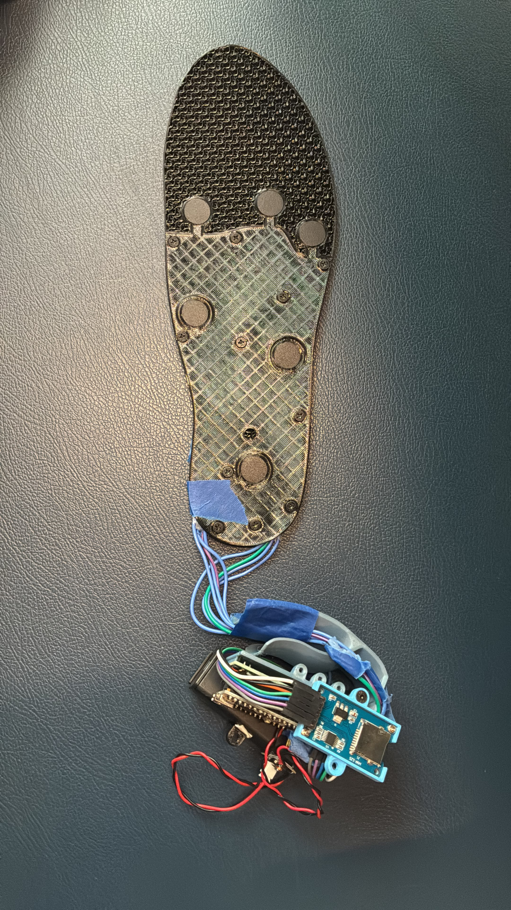
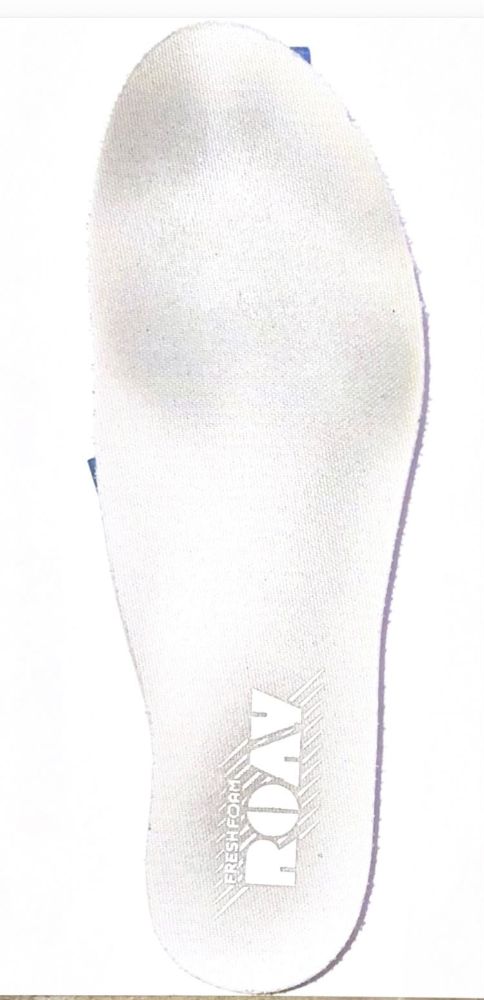
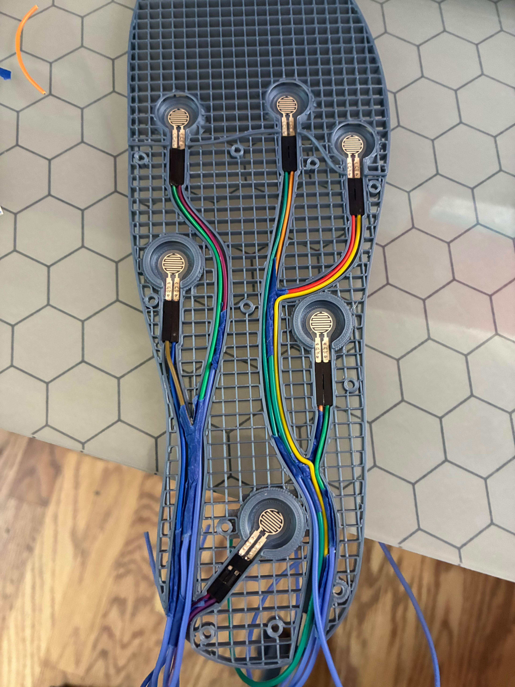

Underfoot - A Smart Insole

Introduction
This project's final goal is to be able to analyze how a person's foot strikes the ground during walking so many foot and gait issues can be checked for as a form of basic detection before major issues occur.
The Start


The idea was inspired by my personal injuries as a cross country runner with recurring shin splints. I wanted a way to see how my foot was impacting the ground because running shops and coaches told me that improper foot strikes are the main source of injury.
(Documentation in progress | Future updates pending)
You can also check out my research paper about gait classification using pressure data from the Insole here!